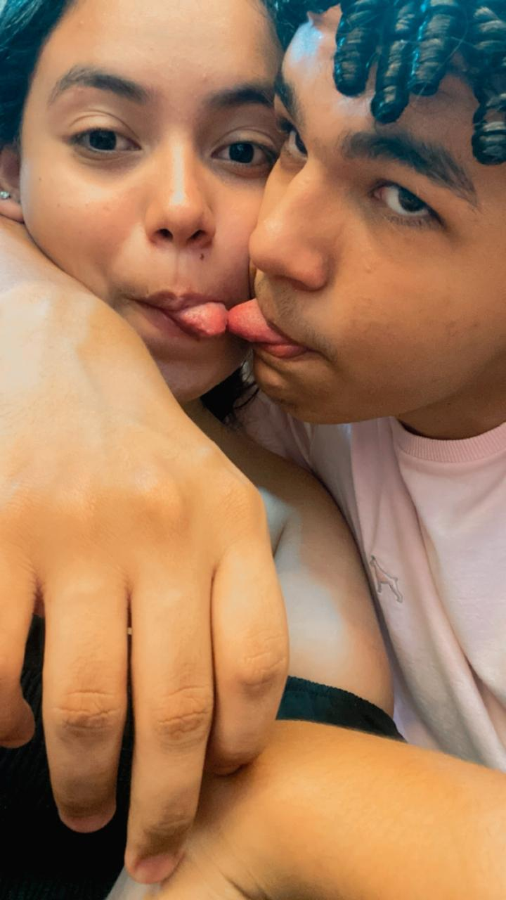
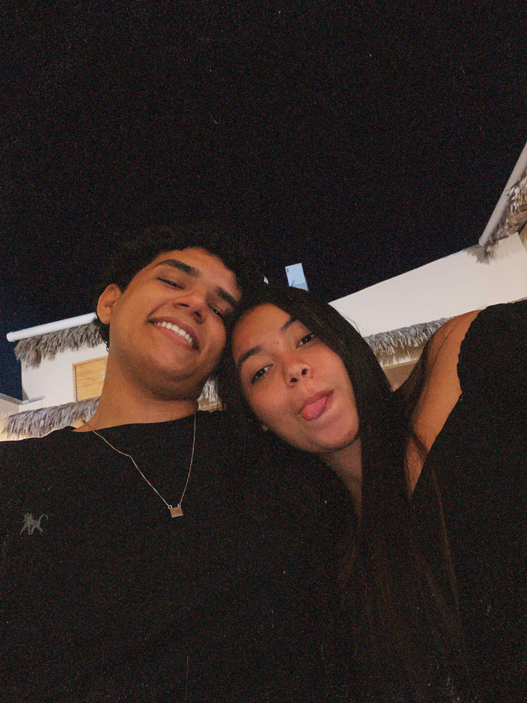

Momentos Especiais



Bem-vinda ao nosso cantinho especial!
Nosso Primeiro Encontro
Data: 28/12/2023
Onde tudo começou...
Primeiro Beijo
Data: 28/12/2023
Foi mágico...
hoje é um dia muito especial, e não consigo deixar de me emocionar ao pensar em tudo o que vivemos juntos até agora. Um ano... parece que foi ontem que nos encontramos pela primeira vez, e ao mesmo tempo, sinto como se tivéssemos vivido uma vida inteira juntos. O tempo voa quando estamos ao lado de quem amamos, mas cada segundo ao seu lado foi único, inesquecível e cheio de significado. Ao olhar para trás e ver tudo o que construímos nesse primeiro ano, só posso sentir uma enorme gratidão. Lembro de cada sorriso, de cada conversa, dos momentos de silêncio confortável e das risadas que compartilhamos até altas horas. As nossas pequenas aventuras, os passeios inesperados, e momentos simples de estar em casa, fazendo nada, mas sentindo que o mundo está perfeito porque estamos juntos. ❤️ Você me trouxe mais do que felicidade. Me trouxe um amor puro, verdadeiro, que me faz sentir seguro e inspirado a ser uma pessoa melhor. Nunca imaginei o que era viver um amor tão profundo e genuíno. Ao seu lado, aprendi a importância de respeitar, cuidar e apoiar, e você me ensinou a ver a beleza nas pequenas coisas do dia a dia. Este primeiro ano foi um processo de descobertas. Cada dia foi uma nova oportunidade de aprender mais sobre você e sobre nós. Aprendemos a lidar com os desafios, a nos apoiar nos momentos difíceis e a celebrar as vitórias, grandes ou pequenas. Aprendi tanto com você, e cada lição foi valiosa. Você me mostrou que o amor vai além das palavras, é um gesto, um olhar, uma ação que diz mais do que qualquer frase poderia expressar. Me apaixonei por você não só pelos gestos e carinho que você me oferece, mas pela pessoa maravilhosa que você é. Sua bondade, seu jeito de ver o mundo, o modo como você cuida de mim e das pessoas que ama Sou imensamente grato por ter alguém tão especial ao meu lado. Você me faz sentir único e amado do jeito que sou. E eu te prometo, com todo meu coração, que sempre vou me esforçar para ser essa pessoa que te faz sentir da mesma maneira. Nosso amor é como uma jornada que estamos construindo juntos, e estou tão feliz por saber que este é só o primeiro capítulo da nossa história. Mal posso esperar para viver tudo o que o futuro nos reserva. Quero estar ao seu lado em todos os momentos: nas vitórias e nas dificuldades, nas alegrias e nas tristezas. Porque sei que, enquanto estivermos juntos, qualquer coisa será possível. Obrigado por ser a melhor parte dos meus dias, por ser minha inspiração, minha força, minha calma, minha paixão. Por fazer os meus dias mais leves e cheios de sentido. Quero continuar escrevendo nossa história, um dia de cada vez, com você. Porque se este primeiro ano foi tão maravilhoso, mal posso imaginar o que nos espera daqui para frente. Você é a razão do meu sorriso, e sou eternamente grato por te ter na minha vida. Que venham mais anos, mais aventuras, mais risadas e mais amor. Porque com você, sei que somos capazes de tudo. Te amo mais do que as palavras podem expressar. E sou imensamente feliz por viver ao seu lado. Aqui está para nós, para o nosso primeiro ano e para todos os que virão.
Vamos testar quanto você lembra dos nossos momentos?